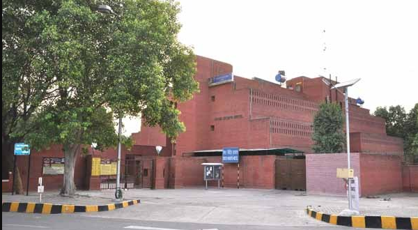

Sister Nivedita was a dynamic philosopher whose life was a saga of service and sacrifice. She was born on October 28, 1867. Known as Margaret Nobel in her younger days, she was highly influenced by the teachings of Swami Vivekananda and came from distant Ireland to India to serve the people of this land. She was given the name "Nivedita" as one dedicated to God. She completely identified herself with the welfare of the nation in various ways, viz. teaching, social reform, nationalism, relief work, journalism, art and architecture. In March 1899, when a devastating plague broke out in Calcutta, Nivedita formed a committee of social workers and literally saved hundreds of victims from the jaws of death, staking her own life in the process. She was a great intellectual and moral force behind the great Swadeshi Movement which came in the wake of the Partition of Bengal in 1905. Sister Nivedita was an ardent patriot and a Karma-yogi of the Vivekananda brand. She was indeed a nationalist of nationalists. Her breadth of outlook, curiosity, courage, self-discipline and enthusiasm were without a parallel. She was looked upon as a luminous elder, leader and pioneer. Rabindranath Tagore called her "Mother of the people". He once said: "She is to be honored not because she was like us, but because she was greater than we..." Sister Nivedita Hostel for girl students was started in the year 1999. It has capacity to accommodate 85 girls.
